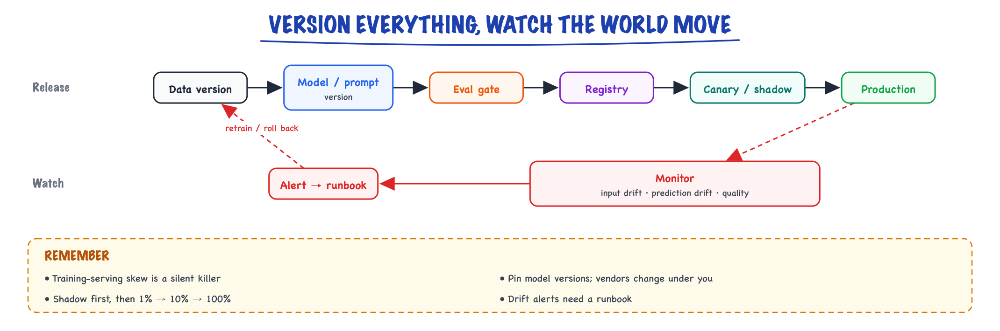

MLOps & drift // Production & evals
Version everything that changes behaviour, and notice when the world moves.
01 — At a glance

Every behaviour change (data, prompt, model, code) is versioned and gated by evals before rollout; monitoring catches drift and triggers retraining or rollback.
02 — New words
| Word | Meaning |
|---|---|
| Release | The full set of things that determine behaviour, pinned together: model snapshot, prompt, examples, decoding settings, index build, tool schemas, code. |
| Model snapshot vs alias | A snapshot names one fixed model version; an alias ("latest") can be repointed by the provider without notice. |
| Covariate drift | The inputs change: \(P(x)\) moves. Different topics, lengths, languages or formats arrive than before. |
| Concept drift | The right answer for the same input changes: \(P(y \mid x)\) moves, for example because a business rule changed. |
| Label shift | The mix of correct answers changes: \(P(y)\) moves, for example more billing tickets than before. |
| Reference window | The period whose data counts as "normal", against which current data is compared. |
| PSI | Population stability index: one number for how far a distribution has moved from its reference. Near 0 means stable. |
| Domain classifier | A model trained to tell reference data from current data. If it cannot (AUC near 0.5), nothing has drifted that it can see. |
| Label delay | The time between a prediction and learning whether it was right. Often days, sometimes never. |
| Proxy metric | A signal available immediately that correlates with quality: confidence, abstention rate, human corrections, judge scores. |
| Shadow / canary | Shadow: the new release runs on live traffic but its outputs are discarded. Canary: it serves a small share of real users. |
| Slice | A subset of traffic (a category, a language, a customer tier) whose metrics are tracked separately. |
| Drift | Input/prediction distributions moving away from training data. |
| Canary / shadow | Small-% rollout / run silently beside prod before shipping. |
The full explanation
03 — The question
A model that passed its evaluation in March can be wrong in June without anyone touching it. Customers start asking about a new product, a policy changes what the correct answer is, a provider updates the model behind an alias, an upstream system changes the format of its input. MLOps for LLM systems is the discipline of knowing exactly what you are running, noticing when the world it runs in has moved, telling which kind of movement it is, and changing the system safely in response.
What interviewers ask:
- What is drift, what kinds are there, and how do you detect each when labels arrive late?
- What must be versioned in an LLM application, and why is the model name not enough?
- How do you roll out a prompt or model change and know, statistically, that it did not make things worse?
- When drift is detected, how do you decide between changing the prompt, retraining, or rolling back?
Running example: TicketRouter. A prompted LLM classifies about 20,000 support tickets a day into 8 queues: billing, shipping, returns, account, technical, product questions, cancellations and other. Low-confidence tickets go to a human triage queue. Labels come from humans: if an agent moves a ticket to a different queue, the original prediction was wrong; if nobody moves it within 48 hours, it is treated as right. Last month's measured accuracy was about 90%.
04 — Step 1: know exactly what is running
You cannot reason about why behaviour changed if you cannot list what could have changed. For TicketRouter the behaviour depends on:
- the model, as a pinned snapshot, not an alias;
- the prompt template and its few-shot examples, as content hashes;
- decoding settings (temperature, max tokens, structured-output schema);
- the confidence threshold that sends tickets to humans;
- the preprocessing code that strips signatures and quoted replies from the ticket;
- for retrieval systems, the index build (chunker, embedding model, corpus snapshot).
Pin all of them together as one immutable release with an ID, and record that release ID on every prediction (see Observability). Then "what changed between Tuesday and Wednesday?" is a diff of two release records, and any logged prediction can be reproduced with the exact configuration that produced it.
The model alias deserves its own warning. If you call "provider-model-latest", the provider may repoint it to a newer model; your system changes behaviour on a date you did not choose. Pin snapshots in production, and treat a snapshot upgrade like any other release: evaluated before, rolled out gradually.
05 — Step 2: three ways the world moves
Write the task as learning \(P(y \mid x)\): given a ticket \(x\), the probability of each queue \(y\). The joint distribution of tickets and correct queues can change in three distinct ways, and each needs a different response:
- Covariate drift, \(P(x)\) changes. The shop launches a smart-home hub; technical tickets about pairing and firmware jump from 12% to 22% of traffic. The rule for routing them is unchanged.
- Concept drift, \(P(y \mid x)\) changes. Finance decides that refunds of subscriptions are now handled by the account team, not billing. The tickets look exactly as before; the correct answer for them is different.
- Label shift, \(P(y)\) changes with the per-class appearance staying the same: more billing tickets in the week invoices go out. Often seasonal and harmless.
Two more sources look like drift from the outside but come from your side of the fence: a model change (a provider update, or your own release), and an upstream change (the email system starts appending a long footer that mentions "billing" to every ticket). Both alter behaviour while the real world stands still.
06 — Step 3: why the mix alone moves accuracy
Covariate drift hurts only when traffic moves toward inputs the model handles worse. TicketRouter's accuracy differs by category; it is weakest on technical tickets (78%), which are varied and jargon-heavy, and on "other" (70%):
| Queue | billing | shipping | returns | account | technical | product | cancel | other |
|---|---|---|---|---|---|---|---|---|
| Accuracy | 0.95 | 0.94 | 0.93 | 0.90 | 0.78 | 0.88 | 0.92 | 0.70 |
| Mix last month | 0.20 | 0.18 | 0.15 | 0.12 | 0.12 | 0.10 | 0.08 | 0.05 |
| Mix after launch | 0.24 | 0.15 | 0.12 | 0.11 | 0.22 | 0.08 | 0.05 | 0.03 |
Overall accuracy is the mix-weighted average: \(\sum_c \text{share}_c \times \text{acc}_c\). Before the launch that is 0.897; after, 0.889. Not a single per-category accuracy changed, yet the headline number fell, because more traffic now lands in the weakest large slice. The reverse also happens: a real regression on a small slice can be hidden by a favourable mix elsewhere.
So the first monitoring rule is track metrics per slice, not only in aggregate, and interpret aggregate changes in the light of the mix.
07 — Step 4: putting a number on distribution change
To detect that the mix moved, compare the current distribution of some input feature with a reference window. For a categorical feature (here, the predicted category, or a topic tag) or a numeric one cut into bins, the population stability index is
\[ \text{PSI} = \sum_{i} (a_i - e_i) \ln\frac{a_i}{e_i} \]where \(e_i\) is the reference share in bin \(i\) and \(a_i\) the current share. Each term is non-negative (if \(a_i > e_i\), both factors are positive; if smaller, both negative), so PSI is zero only when nothing moved. It is a symmetric form of the KL divergence.
For the launch, the eight terms sum to 0.110, and one bin dominates: technical, \((0.22 - 0.12) \ln(0.22/0.12) = 0.061\), more than half the total. That is the useful property of PSI in practice: the per-bin contributions say where the distribution moved, not just that it did.
Common rules of thumb read PSI below 0.1 as stable, 0.1 to 0.25 as a moderate shift worth investigating, and above 0.25 as a major shift. They are conventions, not laws; calibrate thresholds on your own history by computing week-over-week PSI during periods you know were normal.
08 — Step 5: significance is not importance
An obvious alternative is a statistical test: a chi-square test on category counts, or a Kolmogorov–Smirnov test on a numeric feature, alerting when the p-value is small. With production volumes this backfires. Take a trivial wobble, billing up from 20% to 21% and two small categories down half a point, measured on one day's 20,000 tickets. The chi-square test gives \(p \approx 10^{-7}\): "highly significant". The PSI is 0.0013: nothing worth a second look.
A p-value answers "is there any difference at all?", and with enough data the answer is almost always yes. The operational question is "is the difference large enough to matter?", which is a question about effect size. Use effect-size measures (PSI, distance between distributions, change in a slice's share) with thresholds calibrated on normal variation, and use tests only to confirm that a large-looking change on a small sample is not noise.
09 — Step 6: drift in text and embeddings
Classical models have tidy numeric features to monitor. An LLM's input is free text, so you construct features worth watching:
- Cheap structural features: length in tokens, language, share containing attachments, code or URLs. The email-footer incident shows up immediately as a jump in median length and in the share of tickets containing "billing".
- Topic: the model's own predicted category (with the caveat that a model change also moves it; see Step 7), or clusters of input embeddings.
- Embedding distribution: embed every ticket with a fixed embedding model and compare the current window's embeddings with the reference window's.
Comparing two clouds of 1,000-dimensional vectors directly is awkward. A robust trick is the domain classifier: label reference tickets 0 and current tickets 1, train a simple classifier to tell them apart, and measure its cross-validated AUC. If the two windows come from the same distribution, no classifier can separate them and the AUC is about 0.5. The more they differ, the higher it goes. On simulated ticket embeddings (code below): 0.50 for two samples of the same month, 0.55 when only the category mix shifts, 0.61 when technical tickets also start discussing a new product. And the tickets the classifier is most confident are "new" are exactly the ones to read first.
10 — Step 7: when labels arrive late, read the symptoms together
TicketRouter's labels arrive after 48 hours, and only for tickets humans touched. Many LLM tasks have worse delay, or no labels at all. You need signals available now, and the trick is to read them as a combination, because each kind of change leaves a different signature:
| Input drift (PSI on inputs) | Output drift (PSI on predictions) | Labelled accuracy (delayed) | Most likely cause |
|---|---|---|---|
| Up | Up | Stable or down | Covariate drift or label shift: the world sends different tickets |
| Flat | Up | Often down | Something on your side: model, prompt or preprocessing changed |
| Flat | Flat | Down | Concept drift: same tickets, new right answers |
| Up (one feature, e.g. length) | Up | Down | Upstream format change |
The third row is the dangerous one. When subscription refunds moved to the account team, roughly 5% of tickets started being routed wrongly with full confidence, overall accuracy fell by about 5 points, and every input and output monitor stayed flat, because nothing about the tickets or the model's behaviour changed. Only label-based signals catch concept drift: human corrections, re-route rates, downstream outcomes. That is why some stream of real labels, even small and late, is not optional.
Fast proxies fill the gap: the share of tickets falling below the confidence threshold, the re-route rate in the first hours, and an LLM judge scoring a small sample against the current routing policy. Proxies are correlated with quality, not equal to it; confirm their alarms with labels.
Concept drift also poisons your evaluation set. The golden examples labelled "billing" for subscription refunds are now wrong. An offline evaluation will score the old behaviour as correct and a fixed prompt as a regression. Re-label affected eval cases when a policy changes, and version the eval set with the release (see Evaluating LLM features).
11 — Step 8: how many labels it takes to see a drop
Whether you are watching for drift or judging a new release, the question "did accuracy really fall?" is a statistics question with a known answer. To detect a drop from \(p_1\) to \(p_2\) between two groups (before vs after, or control vs canary) with significance level \(\alpha\) and power \(1 - \beta\), each group needs about
\[ n \approx \frac{(z_{1-\alpha/2} + z_{1-\beta})^2 \,\big(p_1(1-p_1) + p_2(1-p_2)\big)}{(p_1 - p_2)^2} \]labelled examples, where the \(z\) values are standard normal quantiles (1.96 and 0.84 for \(\alpha = 0.05\) and 80% power). From a 90% baseline:
| Drop to detect | Labelled examples per group |
|---|---|
| 90% → 89% | 14,749 |
| 90% → 87% | 1,772 |
| 90% → 85% | 683 |
The squared difference in the denominator is the lesson: halving the effect you want to see quadruples the data you need. Detecting one point of change needs more labelled tickets than a 10% canary sees in a week; detecting three points needs about a day of a 10% canary, plus the 48-hour label delay. Decide the smallest change worth detecting before the rollout, and size the canary and its duration from it, instead of watching a dashboard and hoping.
12 — Step 9: changing the system safely
Every release, whether a prompt edit, a model snapshot upgrade, new few-shot examples or a re-built index, follows the same path, with gates sized by Step 8:
- Offline gate: run the versioned evaluation set, per slice. Block on regressions beyond the noise level, with special attention to slices the change was not meant to touch.
- Shadow: run the new release on live traffic and discard its outputs. Compare its predictions with production's: where do they disagree, and on which slices? This costs model calls but no user risk, and catches crashes, cost spikes and large behaviour shifts within hours. Side-effecting actions must be disabled in shadow mode.
- Canary: serve a small share (say 10%, about 2,000 tickets a day) and compare its labelled accuracy, proxy metrics and cost with the control group over a period long enough to reach the required sample size and let labels arrive.
- Full rollout, with the previous release kept deployable for instant rollback. For retrieval changes, keep the old index online until the new one has proven itself.
Rollback should be a configuration flip back to a previous release ID, rehearsed, not a rebuild. Note what rollback cannot undo: tickets already misrouted, answers already sent. That is the argument for the shadow and canary stages.
13 — Step 10: responding to drift
Detection is half the job. The response depends on the diagnosis from Step 7:
- Covariate drift onto a weak slice (the hub launch): improve the model where traffic now is. Add few-shot examples of hub tickets, describe the new product in the prompt, or route that slice to a specialised prompt. Re-weight the evaluation set so it reflects the new mix.
- Concept drift (the refund policy): this is a specification change. Update the category definitions in the prompt, re-label the affected evaluation examples, and treat it as a release. No amount of retraining on old labels can learn a rule that is not in the data.
- Model change: if a pinned snapshot is being retired, evaluate the replacement as a candidate release before the deadline, not after. If an alias moved under you, pin and roll back first, investigate second.
- Upstream change: fix it at the input, by updating preprocessing to strip the new footer, rather than teaching the model to cope with it.
- Fine-tuned models: retrain on a schedule or on a drift trigger, but only with fresh, correctly labelled data and through the same gates. Retraining on the model's own uncorrected predictions bakes its errors in.
Some teams retrain or refresh on a fixed calendar; others on triggers. Prompted LLM systems usually need fewer "retrains" and more specification maintenance: keeping the prompt, examples and eval set in step with how the business actually works.
14 — In code: measuring drift and sizing a canary
PSI on the category mix, with per-bin contributions, and the effect of the mix on overall accuracy:
import numpy as np cats = ["billing", "shipping", "returns", "account", "technical", "product", "cancel", "other"] ref = np.array([0.20, 0.18, 0.15, 0.12, 0.12, 0.10, 0.08, 0.05]) # last month's mix cur = np.array([0.24, 0.15, 0.12, 0.11, 0.22, 0.08, 0.05, 0.03]) # the week after the launch acc = np.array([0.95, 0.94, 0.93, 0.90, 0.78, 0.88, 0.92, 0.70]) # per-category accuracy, unchanged def psi(expected, actual, eps=1e-6): e, a = np.clip(expected, eps, None), np.clip(actual, eps, None) return float(np.sum((a - e) * np.log(a / e))) print(f"overall accuracy before {ref @ acc:.3f}, after {cur @ acc:.3f}") print(f"PSI of the category mix: {psi(ref, cur):.3f}") for c, e, a in zip(cats, ref, cur): print(f" {c:9s} {e:.2f} -> {a:.2f} contribution {(a - e) * np.log(a / e):.4f}")
A significance test versus an effect size on a trivial shift, and drift in embeddings measured with a domain classifier (numpy, scipy and scikit-learn):
import numpy as np from scipy.stats import chisquare from sklearn.linear_model import LogisticRegression from sklearn.model_selection import cross_val_score rng = np.random.default_rng(0) ref = np.array([0.20, 0.18, 0.15, 0.12, 0.12, 0.10, 0.08, 0.05]) tiny = np.array([0.21, 0.18, 0.15, 0.12, 0.12, 0.095, 0.08, 0.045]) # a one-point wobble n = 20_000 counts = rng.multinomial(n, tiny) psi = np.sum((tiny - ref) * np.log(tiny / ref)) print(f"tiny shift: chi-square p = {chisquare(counts, ref * n).pvalue:.1e}, PSI = {psi:.4f}") # Embedding drift with a domain classifier: can a model tell last month's tickets from this week's? centroids = rng.normal(size=(8, 64)) # one cluster per category, 64-dim "embeddings" def tickets(mix, k, shift=0.0): labels = rng.choice(8, size=k, p=mix) x = centroids[labels] + rng.normal(scale=2.0, size=(k, 64)) x[labels == 4] += shift # technical tickets now talk about a new product return x def drift_auc(a, b): X, y = np.vstack([a, b]), np.r_[np.zeros(len(a)), np.ones(len(b))] return cross_val_score(LogisticRegression(max_iter=2000), X, y, cv=5, scoring="roc_auc").mean() cur = np.array([0.24, 0.15, 0.12, 0.11, 0.22, 0.08, 0.05, 0.03]) print(f"same distribution AUC {drift_auc(tickets(ref, 3000), tickets(ref, 3000)):.2f}") print(f"mix shifted AUC {drift_auc(tickets(ref, 3000), tickets(cur, 3000)):.2f}") print(f"mix + new content AUC {drift_auc(tickets(ref, 3000), tickets(cur, 3000, shift=0.6)):.2f}")
It prints \(p \approx 10^{-7}\) but PSI 0.0013 for the wobble, then AUCs of 0.50, 0.55 and 0.61. And the sample-size formula from Step 8:
from math import ceil from statistics import NormalDist def n_per_arm(p1, p2, alpha=0.05, power=0.8): """Labelled examples needed in each arm to detect accuracy p1 -> p2 (two-sided test).""" z = NormalDist().inv_cdf za, zb = z(1 - alpha / 2), z(power) return ceil((za + zb) ** 2 * (p1 * (1 - p1) + p2 * (1 - p2)) / (p1 - p2) ** 2) for drop in (0.01, 0.03, 0.05): n = n_per_arm(0.90, 0.90 - drop) print(f"detect 90% -> {90 - drop*100:.0f}%: {n:5d} labelled tickets per arm")
15 — MLOps — version everything that changes behavior
"It worked last week" is only debuggable if you can name exactly what changed. In an LLM system, far more things change behavior than in ordinary software.
The mini-scenario: Tuesday, support tickets spike — the bot is "giving weird answers about billing." You check deploys: nothing shipped. You check the provider status page: green. Three hours later you find it: a teammate re-ran the ingestion pipeline Monday night with a chunker fix, which changed chunk boundaries, which changed what retrieval returns for billing queries. No code deploy, no model change — and yet the system's behavior deployed. If your version manifest had included the index build ID, the first diff you ran would have found it in three minutes. That's the entire pitch for this topic.
16 — The version manifest
| Classic ML | LLM apps add |
|---|---|
| code + environment | provider + model identifier (models get silently updated!) |
| data snapshot + schema | prompts + tool schemas (a reworded prompt = a deploy) |
| features/preprocessing | retrieval corpus + chunker + embedding model + index (one contract — change one, reindex all) |
| weights + hyperparams + seeds | agent workflow, guardrail policies |
| eval results | graders + eval datasets (a changed judge changes every score) |
Make it a file. One document, checked into git, that names every behavior-affecting component with an immutable reference. The rule of inclusion: if changing it could change an answer, it goes in the manifest.
release: support-bot-2026.03.2 created: 2026-03-14T09:20:00Z owner: platform-team models: primary: provider: anthropic id: claude-sonnet-4-5 # pinned snapshot id, never an alias params: {temperature: 0.0, max_tokens: 1024} router: provider: anthropic id: claude-haiku-4-5 escalation_threshold: -0.35 # tuned values are versioned too prompts: # content-addressed: hash IS the version system: prompts/system.md @ sha256:9f2c41… query_rewrite: prompts/rewrite.md @ sha256:77ab02… tool_schemas: tools/schemas.json @ sha256:c410de… retrieval: # ONE contract — these move together corpus_snapshot: s3://kb/snap-2026-03-13 # immutable copy chunker: {name: recursive_md, version: 1.4.0, size: 512, overlap: 64} embedding_model: text-embedding-x-2026-01 # pinned, not "latest" index_build: idx_20260313_2210 # rebuild = new id reranker: {name: rerank-v3, top_k: 4} guardrails: policy_pack: guardrails/policies.yaml @ sha256:5b7e90… injection_filter: v2.1 evals: # the ruler is versioned like the thing suite: evals/support-v12 # it measures grader_model: claude-sonnet-4-5 # a changed judge changes every score results: {resolution: 0.87, faithfulness: 0.94, run: eval_run_88123} compat: cache_namespace: sb-2026.03.2 # response caches keyed per release rollback_to: support-bot-2026.03.1 # tested, not aspirational
Three properties matter more than the exact schema. Immutability: every reference is a hash, snapshot, or build ID — prompts/system.md alone is useless because the file changes; the hash pins what was actually running. Completeness: the tuned threshold, the reranker's top_k, the grader model — the embarrassing incidents come from the fields people leave out. Diffability: "what changed between last week and now?" must be answerable by diff release-1.yaml release-2.yaml. When the pager goes off, that diff is your first move.
Where does it live?
Anywhere append-only and queryable: git (fine to start), MLflow's model registry, or areleases table in Postgres. What matters is that the running service logs its release ID on every trace (Observability), so any logged request can be mapped back to the exact manifest that produced it — that's the join that makes debugging and replay possible.17 — Deployment discipline
- Staged rollout: shadow (run silently next to prod) → canary (small %) → full; explicit rollback path rehearsed, not hoped.
- Eval gates in CI: a prompt/model/index change ships only after the frozen eval suite passes; regressions block.
- Immutable artifacts: the thing you tested is byte-for-byte the thing you deployed — prompts included (this also keeps prompt caches hot, Tools & agents).
- Training–serving skew: preprocessing must be the same code path in training and serving; log serving inputs so you can replay them offline.
Not all changes are the same deploy — three runbooks
A prompt tweak, an index rebuild, and a model swap all "change behavior," but they differ in blast radius, rollback cost, and what can go subtly wrong. Teams that use one generic process either over-ceremony the small changes (so people route around the process) or under-ceremony the big ones (so the big ones cause incidents).
| Prompt change | Index rebuild (chunker/embedder/corpus) | Model swap / upgrade | |
|---|---|---|---|
| Blast radius | one call site, usually | every RAG answer | everything, including tone and tool-calling style |
| Pre-deploy | frozen eval suite + targeted cases for the behavior you meant to change; diff outputs on ~100 goldens, read a sample by hand | build new index alongside old; retrieval evals (recall@k, MRR) old-vs-new; spot-read the worst-moved queries; verify doc counts & ACL metadata carried over | full eval suite + safety/red-team suite (Production & evals security); re-tune router thresholds & any logprob-based checks; cost/latency projection at production shape |
| Rollout | canary 5% → 50% → 100% over hours | alias flip: point read_alias at new index for canary %, both indexes live | shadow (days) → canary (days) → full; watch slices, not averages |
| Rollback | revert hash, redeploy — minutes | flip alias back — instant, if you kept the old index warm; keep it ≥1 week | flip model id back — but responses users already saw don't roll back; comms may be part of rollback |
| Sneaky failure | prompt cache flush → cost/latency spike at 100% (Tools & agents); a "clarity" edit that changes tool-call formatting | chunk IDs change → stale citations, broken "view source" links, response-cache poisoning if keys ignore index version | same-name silent upgrade you didn't initiate — your frozen evals are the tripwire; degraded instruction-following that only shows on the adversarial slice |
Shadow and canary, concretely
import hashlib, asyncio, random RELEASES = {"stable": load_release("support-bot-2026.03.1"), "candidate": load_release("support-bot-2026.03.2")} CANARY_PCT = 0.05 # config, changeable without deploy SHADOW_SAMPLE = 0.20 # shadow 20% of stable traffic (cost control) def _bucket(user_id: str) -> float: """Sticky assignment: a user stays in one arm all session — flip-flopping between releases mid-conversation is its own bug.""" h = hashlib.sha256(user_id.encode()).digest() return int.from_bytes(h[:4], "big") / 2**32 async def handle(request): arm = "candidate" if _bucket(request.user_id) < CANARY_PCT else "stable" resp = await run_pipeline(RELEASES[arm], request) log_trace(request, resp, release=RELEASES[arm].id, arm=arm) # SHADOW: candidate runs on a sample of stable traffic, result unused. # Fire-and-forget; shadow failures must never touch the user path. if arm == "stable" and random.random() < SHADOW_SAMPLE: asyncio.create_task(_shadow(request, resp)) return resp async def _shadow(request, live_resp): try: shadow_resp = await run_pipeline(RELEASES["candidate"], request, side_effects=False) # READ-ONLY: # tools that write (email, tickets, refunds) run in dry-run mode — # shadowing a send_email tool for real is an incident, not a test. log_shadow_pair(request, live=live_resp, shadow=shadow_resp) except Exception as e: log_shadow_error(e) # shadow errors are DATA (candidate is # flaky!) — but never user-facing # Canary judgment: compare arms on $/task, latency p95, error rate, # eval-judge score on sampled pairs, and per-slice quality — a 5% canary # with 40 intents has ~zero data per intent per day; size the canary # window to the SLICE you care about, not the average.
Shadow answers "does the candidate crash, cost, or slow down?" for free, and — via judged comparison of logged pairs — "does it answer differently, and better?" Canary answers "do real users and real feedback like it?" with real stakes. You want both: shadow catches the 3am-obvious failures before any user sees them; canary catches what only user behavior reveals. The side_effects=False line is load-bearing — the classic shadow-mode incident is the candidate double-sending every email for a week.
Training–serving skew: detect it by replay
Skew is when offline and online disagree: your eval pipeline preprocesses one way, serving preprocesses another, and your beautiful offline scores describe a system you aren't actually running. The LLM-era version: eval harness renders prompts with template v2 while prod still ships v1; offline retrieval hits a fresher index than prod; the eval runs temperature 0 while prod runs 0.7. The detector is simple and brutal: replay logged production inputs through the offline pipeline and diff what each side produced.
async def skew_check(sample_size=200): """Pull last night's traces; re-run each through the OFFLINE pipeline at the SAME release id; diff the intermediate artifacts, not just final text (temperature makes final-text diffs noisy).""" traces = await fetch_traces(sample="random", n=sample_size, window="24h", has="release_id") mismatches = [] for t in traces: offline = await offline_pipeline.run( raw_input=t.raw_input, release=load_release(t.release_id)) # pin to what prod ran checks = { # 1. same rendered prompt? (template/version drift) "prompt_hash": sha(offline.rendered_prompt) == sha(t.rendered_prompt), # 2. same retrieved chunk IDs? (index/filter drift) "retrieval": offline.chunk_ids == t.chunk_ids, # 3. same tool schemas presented? (schema drift) "tools": sha(offline.tool_schema_blob) == sha(t.tool_schema_blob), # 4. same params reaching the API? (config drift) "params": offline.model_params == t.model_params, } if not all(checks.values()): mismatches.append({"trace": t.id, "failed": [k for k, ok in checks.items() if not ok]}) rate = len(mismatches) / sample_size emit_metric("skew.mismatch_rate", rate) if rate > 0.01: # ponytail: 1% flat threshold; move to page(f"train-serve skew {rate:.1%}", # per-check thresholds if noisy examples=mismatches[:5]) return mismatches # Prerequisite (worth the storage): serving logs the RENDERED prompt, # retrieved chunk ids, tool-schema hash, and model params on every trace — # not just the user input. If you only log inputs, you can replay but # you have nothing to diff against. Log the intermediates.
Diffing intermediates instead of outputs is the trick: rendered-prompt hash, chunk IDs, schema hash, params. Those are deterministic, so any mismatch is a true positive — a real divergence between what you evaluate and what you serve. When the nightly job pages you with "retrieval mismatch on 14% of traces," you've caught Tuesday's mystery index rebuild before the tickets spike.
18 — Cost accounting
cost per successful task = (model tokens + embeddings + reranking + tool calls + compute + retries + human review + observability) / successful tasks — a cheaper model that triggers more retries and human fixes is a MORE expensive model.
Worked micro-example (illustrative): model A costs $0.09/task raw with a 4% human-escalation rate; model B costs $0.05/task raw with 9% escalation. At $2.50 per human touch: A = 0.09 + 0.04×2.50 = $0.19; B = 0.05 + 0.09×2.50 = $0.275. The "45% cheaper" model is 45% more expensive. This is why the manifest pins tuned thresholds and why eval gates measure $/successful-task, not $/token.
Versioning gotchas
- The alias that moved: pinning
latestor a dated alias that the provider re-points is not pinning. If a true snapshot id isn't available, your frozen eval suite run on a schedule is the only tripwire for silent upstream swaps — treat a score shift with no manifest diff as "the provider deployed." - Half-versioned retrieval: re-embedding with a new model while old vectors remain in the same index = two incompatible geometries in one ANN structure; similarity scores become meaningless quietly. The retrieval block moves as one unit — that's why it shares one
index_buildid. - The grader drifted: someone "improves" the judge prompt; every historical score is now in a different currency and your trend charts lie. Version graders and eval sets like prompts, and re-score a fixed anchor set when either changes so you can splice the trend.
- Config outside the manifest: the env var someone flipped, the feature flag, the temperature override in a hotfix. Rule: the service refuses to start unless every behavior-affecting setting resolves from the manifest. Painful for a week, then it saves you quarterly.
- Rollback rot: the rollback target references an index that was garbage-collected or a prompt file that moved. Rehearse rollback in staging on every release — "rollback_to" is only real if it's been executed.
Takeaway
The unit of deployment is not "the model" — it's the whole behavioral contract: model + prompts + index + tools + graders. Version it as one, gate it with evals, roll it out gradually.Resources
Google's Rules of Machine Learning · Chip Huyen — Designing Machine Learning Systems / AI Engineering · MLflow docs (tracking, registry, prompt/LLM tracing) · Made With ML MLOps course.Exercises
- Write the
release.yamlfor a system you know (or the support bot from this stage). Then audit it against the rule of inclusion: list three behavior-affecting settings you initially forgot (almost everyone forgets a tuned threshold, a grader version, or a reranker top_k). - Take two versions of any prompt you've iterated on. Content-address both (sha256), run 50 identical inputs through each at temperature 0, and diff the outputs. How many changed in ways you didn't intend? That number is why prompt changes are deploys.
- Implement the shadow router from this topic around a toy pipeline (even a single LLM call). Verify: shadow failures never surface to the caller, side-effecting tools run dry, and logged pairs land somewhere queryable. Then compute a judged win-rate between stable and candidate over 100 shadow pairs.
- Build the nightly skew check for one pipeline stage: log the rendered prompt hash at serving time, replay the raw input offline, compare. Introduce a deliberate skew (change the offline template's whitespace) and confirm the check catches it.
- Write the three runbooks (prompt change / index rebuild / model swap) for your own system as one-page checklists, including the rollback command for each. Then actually execute the index-rebuild rollback in staging and record how long it took — if the answer is "we couldn't," you've found this quarter's most valuable ticket.
19 — ML observability & drift — when the world moves
Observability covered watching the system. This one covers watching the world: models decay not because code broke, but because reality drifted away from the training data.
20 — The signal stack (monitor in this order)
| Layer | Signals | Catches |
|---|---|---|
| Service health | rate, errors, latency, saturation | ordinary outages |
| Data quality | schema violations, missingness, range/cardinality changes, freshness, volume | broken upstream pipelines — the most common "model bug" |
| Drift | input/feature distributions vs training; prediction distribution shift | the world changing (new market, new slang, seasonality) |
| Model quality | accuracy/calibration by slice — when labels arrive (often delayed) | actual performance decay |
| Business outcome | the metric that pays the bills | everything the above missed |
The ordering is diagnostic, not just pedagogical: when quality drops, you walk the stack top-down — is the service up? is the data intact? did the inputs move? — because the layers above are cheaper to check and more often guilty. In practice the split is roughly: most "model incidents" are data-quality bugs, some are drift, and only a minority are the model itself decaying. Build your monitors in the same proportion.
Drift is a symptom, not a verdict
Distribution shift doesn't prove quality dropped — it says "look here." If ground-truth labels arrive (even delayed), monitor quality directly and use drift as the early-warning tripwire. Alerting on every drifted feature = alarm fatigue in a week.21 — Detecting drift, in code: PSI and KS
Two workhorses. PSI (Population Stability Index) bins a feature, compares the fraction of traffic in each bin between a reference window (training data, or last month) and the current window; it's symmetric, additive over bins, and has folk thresholds. The KS statistic is the max gap between the two empirical CDFs — binless, with a real hypothesis test attached, but its p-values become uselessly twitchy at large n. Use PSI for dashboards and alerts, KS when samples are small and you want a principled test.
import numpy as np from scipy import stats def psi(reference: np.ndarray, current: np.ndarray, bins: int = 10) -> float: """Population Stability Index. Bin edges come from the REFERENCE quantiles (equal-population bins), then both windows are counted against those same edges.""" edges = np.quantile(reference, np.linspace(0, 1, bins + 1)) edges[0], edges[-1] = -np.inf, np.inf # catch out-of-range drift ref_frac = np.histogram(reference, edges)[0] / len(reference) cur_frac = np.histogram(current, edges)[0] / len(current) eps = 1e-4 # empty-bin smoothing — ref_frac = np.clip(ref_frac, eps, None) # else PSI = inf on any cur_frac = np.clip(cur_frac, eps, None) # newly-empty bin return float(np.sum((cur_frac - ref_frac) * np.log(cur_frac / ref_frac))) def drift_report(reference, current, feature: str) -> dict: p = psi(reference, current) ks_stat, ks_p = stats.ks_2samp(reference, current) # Folk thresholds (illustrative, from credit-risk practice): # PSI < 0.10 stable · 0.10–0.25 moderate shift · > 0.25 major shift verdict = ("stable" if p < 0.10 else "moderate" if p < 0.25 else "major") return {"feature": feature, "psi": round(p, 4), "verdict": verdict, "ks_stat": round(ks_stat, 4), "ks_p": ks_p, "n_ref": len(reference), "n_cur": len(current)} # --- worked example: transaction amounts after entering a new market --- rng = np.random.default_rng(0) ref = rng.lognormal(3.4, 0.8, 50_000) # training window: median ≈ $30 cur = np.concatenate([ # current: 15% of traffic is a rng.lognormal(3.4, 0.8, 42_500), # new segment with bigger orders rng.lognormal(4.6, 0.5, 7_500)]) # median ≈ $100 print(drift_report(ref, cur, "txn_amount")) # → {'psi': 0.18…, 'verdict': 'moderate', 'ks_stat': 0.075…, 'ks_p': ~1e-300, …} # # Interpretation, in order: # 1. KS p ≈ 0 says "distributions differ" — at n=50k it ALWAYS says that. # Statistical significance ≠ practical significance. Alert on effect # size (PSI / KS statistic), never on p-value at production volumes. # 2. PSI 0.18 = moderate: real movement, not pipeline breakage. Look at # WHICH bins moved: here the top bins gained mass → heavier tail → # consistent with "new segment", not "unit change" (a cents-vs-dollars # bug shifts EVERY bin). # 3. Action for 'moderate': check quality on the drifted slice when labels # land; consider retraining with the new segment represented. Not a page.
Operational details that separate a useful monitor from a noisy one: compute drift per segment (a per-country mix shift can show global drift while every country is individually stable — or vice versa); compare same-window-shape to same-window-shape (Tuesday vs reference Tuesdays, not Tuesday vs a month) or seasonality masquerades as drift; and pin the reference window in your release manifest so "drift vs what?" has an answer.
22 — LLM-flavored drift
- Input drift: users start asking things your prompts/retrieval never saw (new product, new language mix).
- Corpus staleness: RAG index falls behind reality — measure retrieval freshness.
- Upstream model drift: the provider updates the model under the same-ish name; your frozen eval suite is the tripwire (pin versions where possible).
- Feedback loops: your own outputs shape user behavior shapes your data. Bandit-style exploration and periodic holdouts keep you honest.
Embedding drift: monitoring text without labels
LLM inputs are text — no columns to run PSI on. The trick: you're already embedding queries for retrieval, so the embedding space is your feature space. Two cheap monitors on top of it: distance between the current window's centroid and the reference centroid (one number, trendable), and PSI on each query's distance-to-reference-centroid (catches spread/outlier drift that centroids miss). Add cluster-level accounting to make alerts actionable: "what are people newly asking about?"
import numpy as np class EmbeddingDriftMonitor: def __init__(self, ref_embs: np.ndarray, k: int = 20): self.ref = ref_embs / np.linalg.norm(ref_embs, axis=1, keepdims=True) self.centroid = self.ref.mean(axis=0) self.ref_dists = 1 - self.ref @ (self.centroid / np.linalg.norm(self.centroid)) # reference topic clusters (fit once; k-means is fine here) from sklearn.cluster import KMeans self.km = KMeans(n_clusters=k, n_init=4, random_state=0).fit(self.ref) self.ref_mix = np.bincount(self.km.labels_, minlength=k) / len(self.ref) def report(self, cur_embs: np.ndarray) -> dict: cur = cur_embs / np.linalg.norm(cur_embs, axis=1, keepdims=True) c = self.centroid / np.linalg.norm(self.centroid) # 1. centroid shift (cosine distance between window means) cur_centroid = cur.mean(axis=0) shift = 1 - float(c @ (cur_centroid / np.linalg.norm(cur_centroid))) # 2. PSI over distance-to-centroid (spread / outlier drift) d_psi = psi(self.ref_dists, 1 - cur @ c) # from drift.py # 3. topic-mix shift: WHICH clusters grew (the actionable part) cur_mix = np.bincount(self.km.predict(cur), minlength=len(self.ref_mix)) / len(cur) grew = np.argsort(cur_mix - self.ref_mix)[::-1][:3] # 4. novelty: queries far from ALL reference clusters = brand-new topic novelty = float((np.min(self.km.transform(cur), axis=1) > np.quantile(self.km.transform(self.ref).min(1), .99)) .mean()) return {"centroid_shift": round(shift, 4), "dist_psi": round(d_psi, 3), "growing_clusters": grew.tolist(), # → sample & READ them "novel_frac": round(novelty, 4)} # >2–3%: retrieval has # no docs for these — the # leading indicator of # "I don't know" spikes # Alert design: trend centroid_shift & novel_frac daily; when they trip, # the on-call's first move is sampling 30 queries from growing clusters # and reading them. Drift monitors that don't hand you examples get ignored.
Two caveats: if you swap the embedding model, every number changes currency — re-baseline (this is a manifest event, an earlier topic). And centroid metrics are blunt: a 2% novel segment barely moves the centroid, which is why the novelty fraction and cluster mix are in there.
The delayed-label join: measuring quality when truth arrives late
Ground truth trickles in: the customer reopens the ticket two days later, the chargeback lands in six weeks, the thumbs-down arrives never. The pattern that makes layer 4 of the stack real is a quality join: log predictions now, join outcomes to them when they arrive, and report quality by prediction date with explicit maturity handling — young cohorts haven't had time to go wrong yet, and dashboards that ignore this show a fake "recent improvement" every single day.
-- predictions(pred_id, ts, release_id, segment, prediction, confidence) -- outcomes(pred_id, outcome_ts, label) -- arrives hours..weeks later WITH joined AS ( SELECT p.pred_id, date_trunc('day', p.ts) AS cohort_day, p.release_id, p.segment, p.prediction, o.label, o.outcome_ts - p.ts AS label_delay FROM predictions p LEFT JOIN outcomes o USING (pred_id) WHERE p.ts > now() - interval '60 days' ) SELECT cohort_day, release_id, segment, count(*) AS n_preds, count(label)::float / count(*) AS label_coverage, avg((prediction = label)::int) FILTER (WHERE label IS NOT NULL) AS accuracy_on_labeled, -- only trust cohorts old enough for ~all labels to have landed; -- p95 label delay comes from history (say, 7 days): (cohort_day < now() - interval '7 days') AS mature FROM joined GROUP BY 1, 2, 3 ORDER BY 1 DESC; -- Dashboard rules: -- * plot accuracy for MATURE cohorts as fact; shade immature ones as -- provisional (or don't plot them) — else every chart "improves" today -- * label_coverage is itself a monitored signal: if coverage drops, your -- outcome pipeline broke — which looks exactly like a quality change -- * GROUP BY release_id: a quality drop that aligns with a release -- boundary is a deploy bug (an earlier topic); one that doesn't is -- drift or data. This one column routes the whole investigation.
For LLM apps the "label" is often a proxy: thumbs, ticket-reopen within 72h, human-edit distance on a draft, escalation. Proxies are biased (angry users click more) — keep a small always-on human-review sample (say 50 traces/day, stratified) as the calibration anchor for the proxies, and treat proxy-vs-human disagreement as its own drift signal.
23 — Alert design: page, ticket, or log
The failure mode of ML monitoring isn't missing signals — it's the wall of yellow that trains everyone to ignore it. Budget pages ruthlessly: a page means a human should stop what they're doing now because acting now changes the outcome. Almost no drift signal meets that bar; almost every data-quality signal does.
| Severity | Criteria | Examples |
|---|---|---|
| Page (now) | user-facing and worsening, or irreversible if left | error/latency SLO burn; schema break or missingness spike on a critical feature; quality gate failing on the canary; skew-check mismatch > threshold; label pipeline down (you're flying blind) |
| Ticket (this week) | real but not burning; needs a human decision, not a reflex | PSI > 0.25 on a top feature; embedding novelty > 3% for 3 days; retrieval freshness lag over SLA; mature-cohort accuracy down on one segment |
| Log/dashboard (context) | explains incidents; never notifies | per-feature PSI trends; cluster mix; confidence histograms; label coverage; cost per task |
Three rules that keep the tiers honest. Aggregate before alerting: one daily "drift digest" (top-5 moved features with effect sizes and sampled examples) beats forty per-feature alerts — same information, one interrupt. Every page needs a next action: if the runbook line for an alert is "look into it," it's a ticket, not a page. Review the budget monthly: count pages, count the ones where a human actually did something within an hour; demote the rest. Alert fatigue is not a personal failing of the on-call — it's a design bug in the alert set.
24 — Two incidents, walked end to end
Incident A: the "drift" that was a data bug
Mon 09:40 page: missingness spike — feature user_tenure_days NULL on 34%
of requests (baseline 0.5%) [data-quality layer]
Mon 09:44 dashboards: PSI(user_tenure_days)=0.9 🔴, prediction distribution
shifted toward "new user" branch; accuracy dashboards flat
(labels not in yet — they'd land 2 days too late to help)
Mon 09:52 walk the stack TOP-DOWN: service healthy → data layer red →
STOP. This is upstream, not the world. Don't touch the model.
Mon 10:05 diff release manifests: no ML deploy. Check upstream: identity
service shipped 08:30, renamed field signup_date → signup_ts.
Feature pipeline's fallback: silently NULL. (The real bug.)
Mon 10:20 mitigate: pin feature pipeline to cached snapshot; page owners.
Mon 11:30 upstream fix deployed; missingness back to 0.5%; PSI recovering.
Postmortem actions: schema CONTRACT on that feed (fail loud, not NULL);
the 34%-NULL condition now fails the pipeline instead of
degrading it; add "no-ML-deploy + sudden single-feature drift
⇒ suspect upstream" to the runbook.
The tell: sudden, single-feature, cliff-shaped drift aligned with someone's deploy (just not yours). Real-world drift is rarely a step function on one feature; pipelines break exactly like that. The data-quality layer paged (missingness is a page: actionable now); the drift layer merely corroborated. And note what did not happen: nobody retrained a model to chase a NULL bug — walking the stack top-down prevented the classic wasted week.
Incident B: the drift that was real
Week 1 ticket: embedding monitor — novel_frac 1.2%→2.8%, cluster #14
growing; sampled queries: users asking about a competitor's
just-launched product & migration paths [drift layer]
Week 1 data-quality: all green. No deploys. Retrieval "no-good-doc"
rate up 2.1%→6.4% on those queries. Not a bug — the WORLD moved.
Week 2 labels mature (quality join): thumbs-down on cluster-14 answers
3× baseline; overall accuracy dip 0.4pt — invisible in the
average, obvious in the slice [quality layer]
Week 2 fix the RIGHT thing (refresh loop): this is corpus staleness +
input drift, NOT model decay → write migration-guide docs, add
competitor-comparison FAQ, re-index; add cluster-14 queries to
the eval suite (20 cases with rubrics)
Week 3 eval gate passes → canary → ship. no-good-doc rate back < 2.5%;
cluster-14 thumbs-down back to ~baseline. Retrain? Not needed —
the model was never the broken part.
The contrasts with Incident A carry the lesson: gradual vs cliff, a coherent new topic vs a broken column, ticket-pace vs page-pace, and the fix was content and retrieval, not pipeline repair — and not reflexive retraining either. The monitor earned its keep by handing the on-call readable examples ("here's what cluster 14 is asking"), which turned a statistical anomaly into a product decision in one meeting.
25 — The retraining / refresh loop
monitor → drift/quality alert → diagnose (data bug? world change? upstream model?) → refresh the right thing (reindex corpus / retrain model / fix pipeline / update prompt) → eval gate → canary → ship. Same loop as Production & evals evals — drift is just another trigger.
Monitoring gotchas
- p-values at scale: with 100k samples, KS flags a 0.5% cosmetic shift as p<1e-30. Alert on effect size; use tests only to rule noise in for small windows.
- Seasonality as drift: weekend traffic vs a weekday reference "drifts" every Saturday. Compare like windows, or your Monday digest is fiction.
- The reference that quietly rolls: a sliding reference window adapts to slow drift and hides it (boiling-frog). Pin the reference per release; move it deliberately, as a logged decision.
- Average-only quality: a 3× regression on a 5% segment moves the average 0.4pt — under your alert threshold, over your users' tolerance. Slice by segment, language, and release.
- Monitoring the model but not the monitor: the outcome-join pipeline silently breaking looks identical to "quality is fine." Alert on label coverage and monitor freshness — meta-monitoring is not optional.
- Embedding-model swaps: every embedding-space metric re-denominates. Re-baseline on the swap or spend a day chasing phantom drift.
Takeaway
Observability is a hierarchy of cheap proxies standing in for one expensive truth (is the system still doing its job?). Data-quality checks catch most incidents, drift narrows the search, delayed-label joins deliver the verdict, and alert design determines whether humans still believe any of it by month three. Wire drift alerts to the same eval-gate → canary → ship loop as every other change — drift is just another trigger.Resources
Evidently (open-source drift/data-quality suite + free course) · Arize Phoenix · OpenTelemetry GenAI semantic conventions for vendor-neutral telemetry.Exercises
- Implement
psi()anddrift_report()from this topic. Simulate three shifts on a lognormal feature — (a) a 15% new heavy segment, (b) a units bug (×100 on all values), (c) pure seasonality (weekend mix) — and write down how PSI, the per-bin pattern, and KS differ across the three. Could your report distinguish bug from drift? - Take 5k real or synthetic user queries, embed them, and build the
EmbeddingDriftMonitor. Inject 300 queries on a brand-new topic and verify novelty and cluster-mix flag it while centroid shift barely moves. Then swap embedding models and observe every metric re-denominate. - Write the quality-join query for a system with delayed labels (real or simulated with a 3-day delay distribution). Plot accuracy by cohort day twice: with and without the maturity cutoff. Screenshot the fake "recent improvement" the naive version shows.
- Audit an alert set (yours, or design one for the support bot): classify every alert as page/ticket/log using this topic's criteria, and for each page write the one-line next action. Count how many pages survive. Typical honest outcome: fewer than five.
- Run a tabletop of Incident A with your team or on paper: at 09:44 the drift dashboard is bright red — write down, minute by minute, how the on-call reaches "don't touch the model" using the signal stack top-down. Then flip the scenario to Incident B's signals and show where the paths diverge.
In production
26 — Where people get lost
- "We didn't deploy anything, so nothing changed." Provider aliases, index rebuilds, upstream formats and the world itself all change behaviour without a deploy. Pin and record everything in a release.
- "Input monitoring will catch drift." It cannot see concept drift: the inputs and the model's outputs stay the same while the right answers change. You need some stream of real labels.
- Alerting on p-values. At production volume every trivial wobble is significant. Alert on effect sizes calibrated on normal weeks.
- Watching only the aggregate. Mix changes move the average without any slice changing, and can hide real slice regressions. Track per slice.
- Trusting an old evaluation set after a policy change. Its labels encode the old rules; fix them before using it as a gate.
- A one-day canary for a one-point regression. Small effects need thousands of labelled examples per arm. Size the canary from the smallest change you care about.
- Retraining as the answer to everything. Concept drift needs a specification change; upstream format changes need a preprocessing fix; covariate drift may need only better examples.
27 — How this connects
Builds on
- Evaluating LLM features — Golden sets, graders, LLM-as-judge done properly, statistics, an eval harness in CI, online evaluation and error analysis.
- Observability — Seeing inside a twelve-step agent: traces, spans, metrics, tools, and what to alert on.
Where this shows up later
- Complete build: prove it, serve it, afford it — Evals, serving, cost and operations for the build.